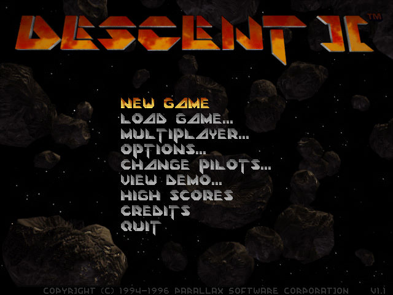
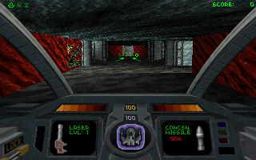
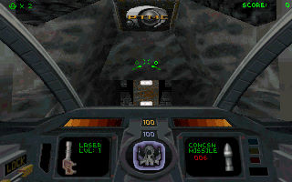

名稱：天旋地轉2 (Descent 2，英文版)
簡介：Parallax 1996年出品的第一人稱太空船射擊遊戲，由Interplay代理發行。同年推出
「眩暈系列（The Vertigo Series）」資料片，1997年收錄在「一二代終極合集（The
Definitive Collection）」 [待補]。



備註：本版為一二代終極合集版
保護：光碟
備註：資料片安裝完為1.2版。
備註：一二代終極合集版，主程式與最終1.1版光碟，除了檔案DESCENT2.SOW不同外，其餘均
相同（包括資料片）。